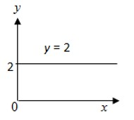
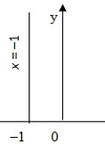
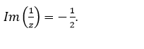
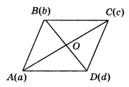
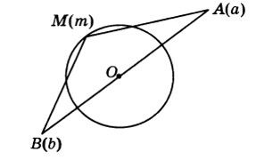
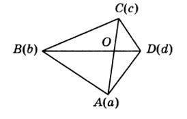

комплексные числа в геометрии
примеры решения задач
Пример 1.
Изобразите графически множество всех точек комплексной плоскости, для которых выполняется данное условие: Im z = 2.
Решение.
Из равенств z = x + yi и Im z = y получаем: z = x + 2i. Множество точек - прямая y = 2.

Пример 2.
Изобразите графически множество всех точек комплексной плоскости, для которых выполняется данное условие: Re z = -1.
Решение.
Из равенств z = x + yi и Re z = x получаем: z = -1 + yi. Множество точек - прямая x = -1.

Пример 3.
Докажите, что равенство | z – z0 | = R задает уравнение окружности радиуса R с центром в точке z0 .
Решение.
Как известно из геометрии, окружность с центром в точке z0 радиуса R представляет собой множество точек плоскости, удаленных от точки z0 на расстояние R. Как уже известно, расстояние между точками z и z0 равно
| z – z0 |. Поэтому равенство | z – z0 | = R задает уравнение окружности радиуса R с центром в точке z0. ч.т.д.
реши сам
Задание 1.
Изобразите на комплексной плоскости число
1) z = 3 - 2i;
2) z = 5 + i;
3) z = -3i;
4) z = 2 - 3i;
5) z = 8 + i.
Задание 2.
Изобразите на комплексной плоскости все комплексные числа z, для которых верно равенство
1) Re z = -1;
2) Re z = 5;
3) Re z = -3;
4) Re z = 2;
5) Re z = 7.
Задание 3.
Изобразите на комплексной плоскости множество комплексных чисел z, удовлетворяющих условию
1) Re z ≥ 0;
2) Im z < 0;
3) Re z > 0;
4) 4 ≤ Re z < 6;
5) 3 < Im z < 8.
Задание 4.
Изобразите на комплексной плоскости множество комплексных чисел z, удовлетворяющих условиям
1) 5 < Re z < 8 и -3 < Im z ≤ 3
2) Re z > 0 и Im z < 0;
3) Re z > 2 и Im z < 7;
4) Im z ≤ 0 и Re z < 6;
5) Im z < 3 и Re z < 5.
Задание 5.
Найдите длину линии, заданной на плоскости равенством 
Задание 6.
Изобразите на комплексной плоскости комплексное число z, если его действительная часть равна -3, а мнимая часть равна 4.
Задание 7.
Найдите площадь фигуры, которая ограничена линией, заданной на плоскости равенством
Задание 8.
Изобразите на комплексной плоскости точки, соответствующие числам z1 и z2, радиус-векторы этих точек и радиус-вектор точки, соответствующей числу z = z1 + z2, если
1) z1 = -1 + 3i, z2 = 4;
2) z1 = -4i, z2 = 2 + i;
3) z1 = -1 + 4i, z2 = 4 - i;
4) z1 = -4 + 2i, z2 = 2 - 4i.
Задание 9.
Изобразите на комплексной плоскости точки, соответствующие числам z1 и z2, радиус-векторы этих точек и радиус-вектор точки, соответствующей числу z = z1 - z2, если
1) z1 = -1 + 4i, z2 = 3;
2) z1 = -4i, z2 = 3 +i;
3) z1 = -1 - 3i, z2 = 5 - i;
4) z1 = -5 + i, z2 = 1 - 3i.
Задание 10.
Докажите, что четырехугольник ABCD является параллелограммом тогда и только тогда, когда комплексные координаты a, b, c, d его вершин удовлетворяют условию a + c = b + d.
Задание 11.
Докажите, что сумма квадратов медиан треугольника равна 3/4 суммы квадратов его сторон.
Задание 12.
Докажите, что если в плоскости параллелограмма ABCD существует такая точка M, что MA2 + MC2 = MB2 + MD2, то ABCD прямоугольник.
Задание 13.
Точки A и B симметричны относительно центра некоторой окружности. Докажите, что для любой точки M этой окружности значение суммы MA2 + MB2 величина постоянная.
Задание 14.
Докажите, что если средние линии (т.е. отрезки, соединяющие середины противолежащих сторон) четырехугольника равны, то его диагонали взаимно перпендикулярны, и обратно.
Задание 15.
Разность углов A и B треугольника ABC равна 90°. Докажите, что расстояние от основания высоты, проведенной к прямой AB, до середины этой стороны равно радиусу описанной около треугольника окружности.
Задание 16.
Докажите, что для всякого выпуклого четырехугольника ABCD выполняется равенство AC2 · BD2 = AB2 · CD2 + BC2 · AD2 - 2AB · BC · CD · DA · cos(∠A + ∠C).
Задание 17.
Даны два параллелограмма ABCD и A1 B1 C1 D1. Докажите, что середины отрезков AA1, BB1, CC1, DD1 являются вершинами параллелограмма.
Задание 18.
Докажите, что сумма квадратов диагоналей четырехугольника равна удвоенной сумме квадратов его средних линий.
Задание 19.
Докажите, что расстояние от вершины C треугольника ABC до точки D, симметричной центру описанной окружности относительно прямой AB, вычисляется по формуле CD2 = R2 + AC2 + BC2 - AB2, где R радиус описанной окружности.
Задание 20.
Доказать, что сумма квадратов диагоналей AC, BD четырехугольника ABCD равна удвоенной сумме квадратов отрезков MN, PQ, соединяющих середины противоположных сторон.
Задание 21.
Докажите, что диагонали четырехугольника перпендикулярны тогда и только тогда, когда сумма квадратов двух его противоположных сторон равна сумме квадратов двух других противоположных сторон.
Задание 22.
Найдите угол между боковыми сторонами равнобедренного треугольника, если медианы, проведенные к боковым сторонам, перпендикулярны.
Задание 23.
Докажите, что ортоцентр треугольника служит центром вписанной окружности для треугольника, вершинами которого являются основания высот данного треугольника.